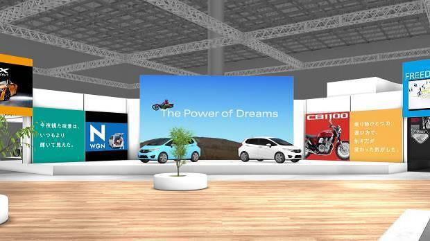
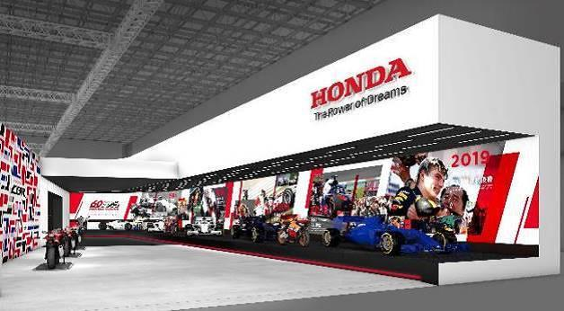

Tokyo Motorshow
Tổng quan về các sản phẩm trưng bày của Honda tại Triển lãm xe Tokyo lần thứ 46 năm 2019
Tokyo, Nhật Bản, ngày 26 tháng 9 năm 2019 - Công ty Honda Motor Chính thức giới thiệu các dòng sản phẩm ô tô, xe máy, các sản phẩm thiết bị điện cũng như mô hình ý tưởng về công nghệ năng lượng sẽ được trưng bày tại Triển lãm xe Tokyo lần
thứ 46 năm 2019 (Thời gian dành cho Báo chí: 23-24/10, Thời gian dành cho Khách tham quan: 25/10 - 4/11/2019)


- Ý tưởng chủ đạo của gian hàng Honda
Gian hàng Honda được thiết kế dựa trên thông điệp đem lại “niềm vui mở rộng tiềm năng tiềm năng cuộc sống” điều mà khách hàng có thể cảm nhận trên từng sản phẩm của Honda. Bên cạnh đó, khi đến với gian hàng Honda, khách tham quan sẽ có
cơ hội trải nghiệm những những công nghệ ưu việt nhất phục vụ cho cuộc sống hàng ngày mà Honda cùng khách hàng có thể sáng tạo nên trong tương lai không xa.
Tâm điểm của gian hàng Honda năm nay là một màn hình có kích thước lớn trình chiếu những hình ảnh sống động, đem đến những trải nghiệm chân thực với các sản phẩm và dịch vụ do Honda cung cấp. Hơn thế nữa, xuyên suốt gian hàng là đa dạng
các chương trình tương tác hấp dẫn dành cho cả gia đình và trẻ nhỏ.
- Lễ ra mắt lần đầu tiên trên toàn thế giới của mẫu xe Super Cub CT125 và Fit hoàn toàn mới
Các mẫu xe máy được trưng bày tại triển lãm sẽ gồm có: mẫu xe ý tưởng CT125 lần đầu tiên ra mắt trên toàn thế giới, được phát triển dựa từ dòng xe Super Cub đã thân thuộc với khách hàng trên toàn cầu. Hơn thế nữa, Benly e:, một mẫu xe
tay ga điện phục vụ cho mục đích sử dụng của doanh nghiệp, và Gyro e:, một mẫu xe tay ga 3 bánh chạy bằng điện cũng sẽ được trưng bày lần đầu tiên trên thế giới. Tại gian trưng bày xe máy sẽ có các mẫu xe CRF1100L Africa Twin, CRF1100L
Africa Twin phiên bản Adventure Sports ES, cả 2 phiên bản xe đều được trang bị hệ thống ly hợp kép DCT, và mẫu xe ga địa hình ADV150 lần đầu tiên ra mắt tại Nhật Bản.
Gian trưng bày ô tô sẽ có: Fit hoàn toàn mới lần đầu tiên ra mắt trên thế giới, cũng như Accord hoàn toàn mới lần đầu tiên ra mắt tại Nhật Bản dự kiến sẽ được bán ra vào đầu năm 2020. Honda cũng sẽ trưng bày Honda e, mẫu xe điện chuyên
dụng lần đầu tiên được giới thiệu tại Nhật Bản. Hơn thế nữa, gian trưng bày ô tô cũng sẽ có sự có hiện diện của các mẫu xe đã đi vào sản xuất: Freed được làm mới sẽ được bán ra vào tháng 10 năm nay, NSX, mẫu siêu xe thể thao hàng đầu
của Honda, cũng như N-BOX Series, mẫu xe cỡ nhỏ bán chạy nhất tại Nhật Bản trong 4 năm liên tiếp*1.
Tại khu vực trưng bày các sản phẩm thiết bị điện liên quan đến lĩnh vực quản lý năng lượng sẽ diễn ra Lễ ra mắt lần đầu tiên trên toàn cầu của LiB AID E500 for Music, một mô hình ý tưởng về bộ nguồn di động được thiết kế dành riêng cho
các thiết bị âm thanh đẳng cấp cũng như một số thiết bị điện đã được Honda sản xuất và bán ra tại thị trường Nhật Bản, bao gồm: động cơ gắn ngoài, máy phát điện và máy cắt cỏ. Không chỉ vậy, Honda sẽ trưng bày các công nghệ liên quan
đến năng lượng, đưa các sản phẩm di động tiếp cận cuộc sống hàng ngày của con người, bao gồm Honda Mobile Power Pack, pin trao đổi di động.
- Các sản phẩm trưng bày đặc biệt mang thông điệp “Niềm vui mở rộng tiềm năng cuộc sống”
Bên bên cạnh các sản phẩm trưng bày trên đây, gian hàng Honda còn tổ chức Kỷ niệm 60 năm bán ra mẫu xe máy CB Series và Kỷ niệm 60 năm Honda tham gia World Grand Prix như một phần của hoạt động đua xe thể thao. Hơn nữa, gian hàng Honda
còn có những không gian trải nghiệm tương tác riêng biệt với Honda, tại đây, khách tham quan có cơ hội tìm hiểu về khả năng vận hành và thiêt kế cũng như ý tưởng phát triển của HondaJet.